双胞胎 Twins
- 难度
- 4
- 移速
- 4.6Charlotte
- 恐惧范围
- 32 米
- 能力
- Blood Bond
- 性别
- Woman (Charlotte)Man (Victor)
- 出身
- 法国人
- 演员
- ["Charlotte: Catherine Gauthier", "Victor: Jean-Baptiste Garnier", "(both BHVR)"]
背景故事
夏洛特和维克多是一对连体双胞胎，姐弟俩之间有着无可比拟的情感羁绊。在17世纪，他们能顺利降生几乎堪称奇迹，却也立刻为他们带来了终身遭受迫害的命运。这对双胞胎出生时，维克多的下半身牢牢嵌在姐姐的胸腔里，双腿缠绕着她的肌肉与内脏。他比夏洛特更小，与其说是一个发育完整的男孩，倒更像她身体上多长出来的一部分。新生儿发出尖叫声的同时，接生婆也尖叫着冲出屋外，大喊着女巫生下了恶魔。由此，对夏洛特、维克多以及他们的母亲玛德琳的猎杀开始了。往后的岁月对这对双胞胎而言不过是转瞬即逝的记忆，但那却是他们最接近正常生活的一段时光。他们相信，所有孩子都要经历与母亲一起的旅程；在法国乡间奔跑躲藏的游戏，不过是稀松平常之事。五岁那年，新的挑战降临：母亲病倒了。玛德琳面色苍白、精疲力竭，别无选择，只能将寻找食物的责任交给夏洛特。女孩用额外的衣物裹住身体，遮掩维克多凸出的部分，从森林中的帐篷出发，走向附近的城镇。虽然景象颇为奇异，但她做着自己受过训练的事：在集市等待时机，扫走一切能拿到的食物。这算是这场游戏里的一次胜利，可就在此时，一位……
专属技能
通用技能 任意杀手均可使用
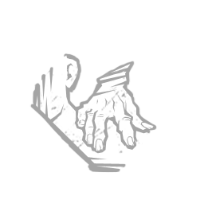
苦涩低语
Bitter Murmur
淘汰弱者
Cull the Weak
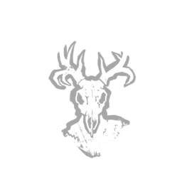
捕鹿人
Deerstalker
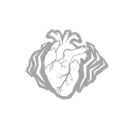
煎熬
Distressing
咒术：命运愚者
Hex: Fortune's Fool
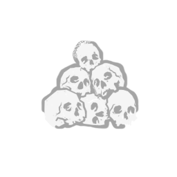
咒术：无人幸免于死
Hex: No One Escapes Death
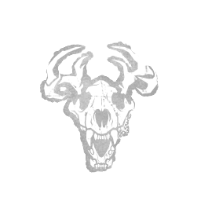
咒术：狩猎快感
Hex: Thrill of the Hunt
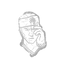
黑暗中
In the Dark
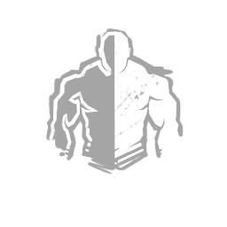
隐秘
Insidious
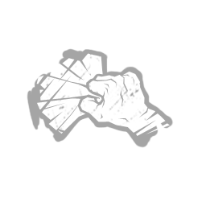
铁掌
Iron Grasp
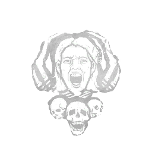
让他们等着
Keep Them Waiting
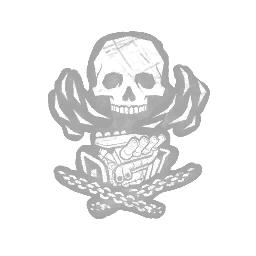
毫无保留
No Holds Barred
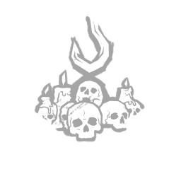
血狱钩：怪诞圣地
Scourge Hook: Monstrous Shrine
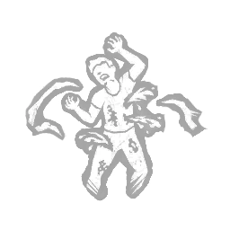
血狱钩：泣血之伤
Scourge Hook: Weeping Wounds
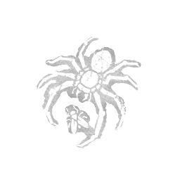
看他们逃窜
See How They Run
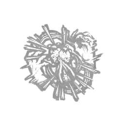
破碎希望
Shattered Hope
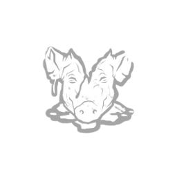
邋遢屠夫
Sloppy Butcher
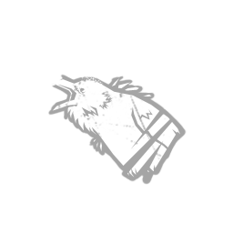
暗影间谍
Spies from the Shadows
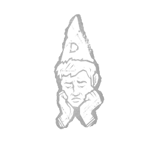
表现失常
Underperform
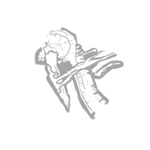
不依不饶
Unrelenting
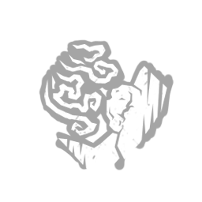
耳语
Whispers
附加品
- 罕见 乳牙 Baby Teeth
- 罕见 血染黑头罩 Bloody Black Hood
- 稀有 猫雕像 Cat Figurine
- 罕见 猫眼 Cat's Eye
- 罕见 仪式烛台 Ceremonial Candelabrum
- 传说 一滴香水 Drop of Perfume
- 传说 森林炖菜 Forest Stew
- 活动 虹彩吊坠 Iridescent Pendant
- 罕见 玛德琳的手套 Madeleine's Glove
- 精贵 玛德琳的围巾 Madeleine's Scarf
- 精贵 生锈针头 Rusted Needle
- 精贵 下水道污泥 Sewer Sludge
- 活动 消音布 Silencing Cloth
- 稀有 变质牛奶 Soured Milk
- 传说 陀螺 Spinning Top
- 精贵 过期饼干 Stale Biscuit
- 稀有 小指甲 Tiny Fingernail
- 稀有 玩具剑 Toy Sword
- 传说 维克多的士兵 Victor's Soldier
- 精贵 沉重拨浪鼓 Weighty Rattle